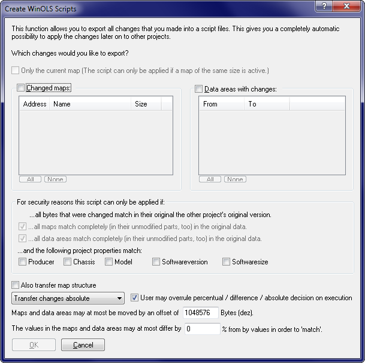

|
The dialog Create scripts (Menu Find) |

  
|
|
The dialog Create scripts (Menu Find) |
|

This dialog is the recommended way to create new scripts. The bases are always the changes in the current project. All you need to do is to select which changes you would like to export. Simply select the maps or data areas containing the changes. Data areas are less secure than maps because WinOLS has less information. So, if possible, register maps that cover data areas.
Data areas that do not contain at least 2 different byte values in the original version, are not listed for security reasons. You can use the "make larger" checkbox to work around this. WinOLS will then increase the size of the data areas until a safe identification is possible.
For maps you have the option the use the map id instead of the values to identify the map. This requires that the map has the id field filled in and that it already exists (with the same id) in the target project.
If possible you should always restrict the script’s applicability as much as possible to avoid misuse and increase comfort. This is done be requiring entire blocks / maps to be recognized. Furthermore you may require certain project properties.
In addition you may define how far addresses can be moved from their origin and how much the values may differ.
When saving, you should always choose a long, descriptive filename since this name will later appear in the script list. Furthermore you should always store scripts in the WinOLS script directory, because they won’t appear in the script list otherwise.
You can find more information about scripts in the respective chapter.
Shortcuts
Mouse: -
Keyboard: -